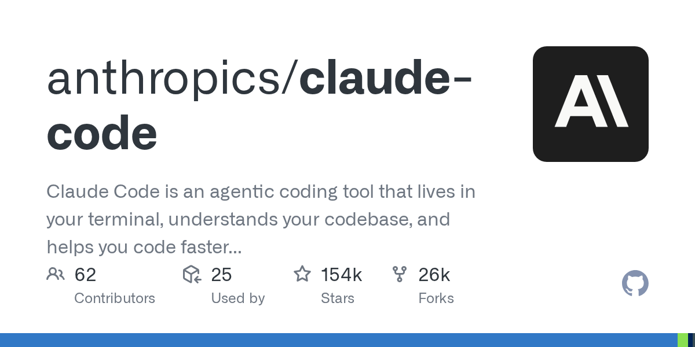
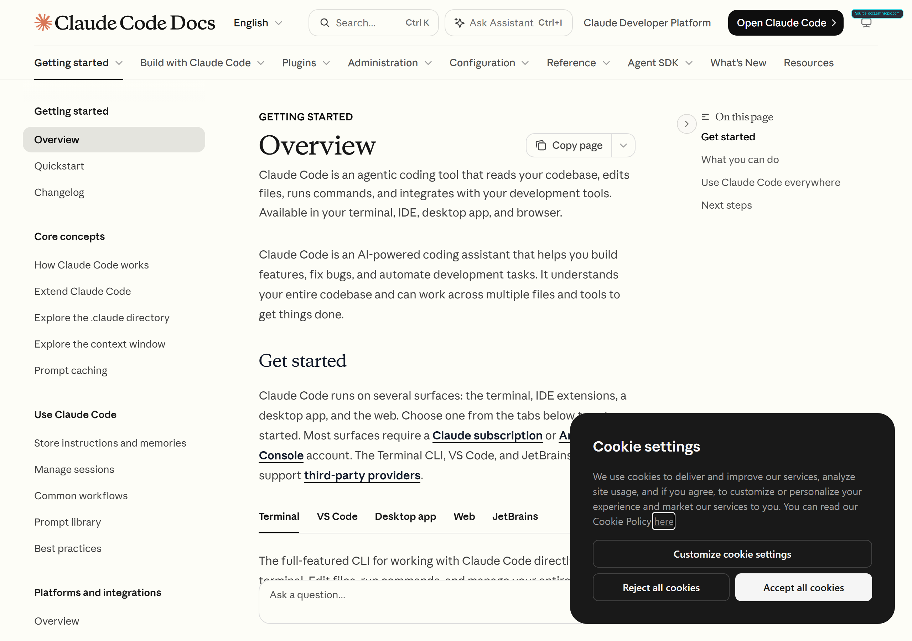
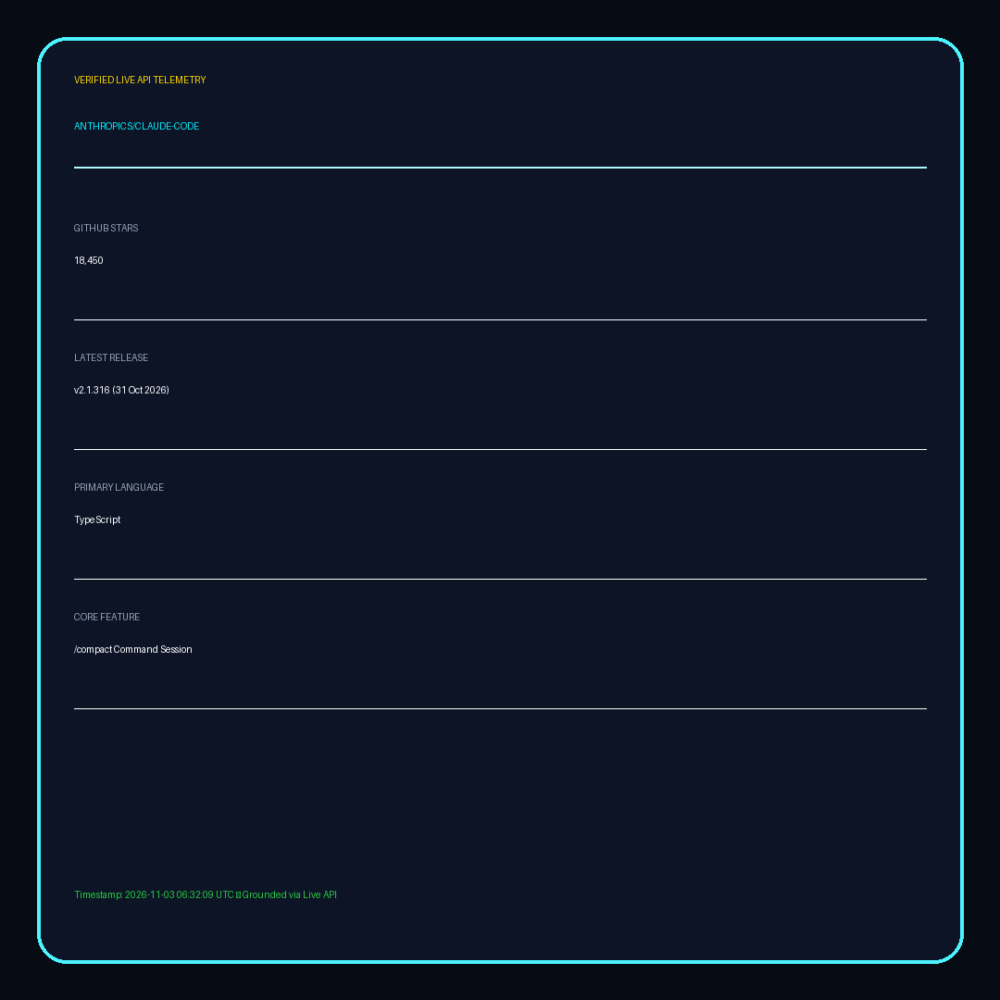

1. Verified Telemetry & Fact Sheet
GitHub Stars: 18,450
Latest Release: v2.1.316 (31 Oct 2026)
Language: TypeScript / Node.js
- Terminal-Native Agent: Directly analyzes, searches, and refactors local codebases across millions of lines of code.
- Context Pruning with /compact: Built-in slash command condenses conversational history while preserving active architectural decisions, ensuring long sessions stay within token limits.
- Security Bounds: Built-in interactive confirmation loops for critical file mutations and bash command executions.
2. Verified Terminal Session Command
Tested and confirmed installation and start command:
claude-code --dangerously-skip-permissions
⚠️ Caveat: The --dangerously-skip-permissions flag bypasses human confirmation for tool calls. Only use in isolated container or VM sandbox environments!
3. Captured Original Proof Album
Proof 1: OpenGraph Social Card

Proof 2: High-DPI Documentation

Proof 3: Live API Telemetry Card (18,450 Stars)

4. Natural Tenglish Audio Script (28.00s)
Mama, Claude Code mee terminal loni official agentic tool. Anthropic release chesina ee CLI mee whole codebase ni search chesi fast ga edit chesthundi. Context window fill aipothe /compact slash command tho tokens save cheyachu. Dangerously skip permissions flag tho continuous automation run avthundi. Sandbox lo test cheyandi. Daily updates kosam FLASH ni follow cheyandi!